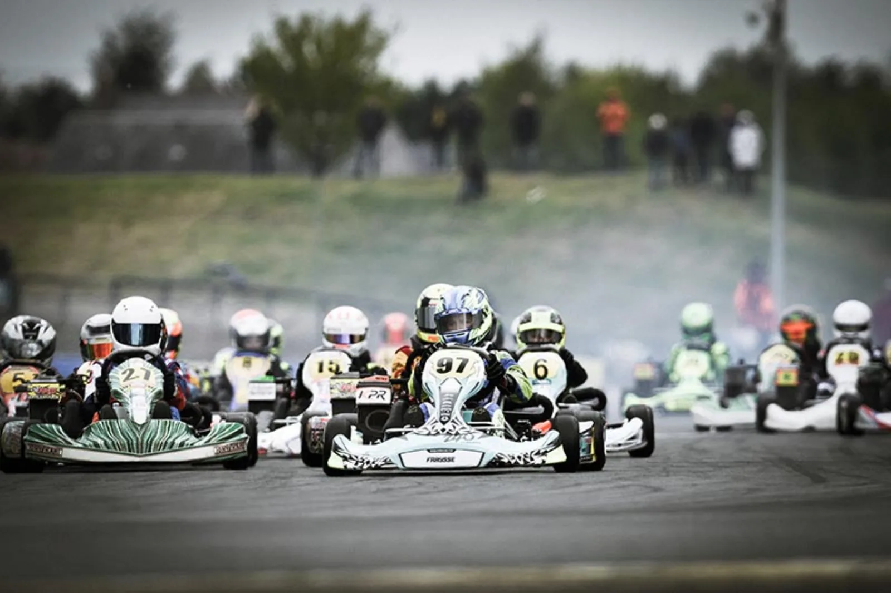

Le châssis champion du monde.
FIA KZ 2024 et 2025, Coupe du monde KZ2 2025, châssis officiel des Rotax Grand Finals depuis 2010 : cinq châssis développés en course par le Sodi Racing Team, du Nova au Sigma KZ.

Du baby-kart
au KZ.
Une seule filière, de 4 ans à la catégorie reine. Le jeune pilote grandit sur SODI, son équipement le suit : pièces TEKNEEX, équipement BOX'S, moteurs Rotax France.

Nova
Baby · Honda GX35 · livré prêt à rouler

Furia 950
Mini · Rotax Mini Max, IAME Gazelle · FFSA

Sigma RS3
Rotax Max, X30, OK/OKJ · officiel Grand Finals

Sigma DD2
Rotax 125 DD2 Evo · freins AV/AR 4 pistons
Sigma KZ
Le kart ultime · champion du monde 2024 & 2025
Sigma KZ 2026
KZ / KZ2 · le kart ultimeÉquipé des dernières technologies développées par l'équipe R&D, le Sigma KZ est un châssis aux performances exceptionnelles dans toutes les conditions de piste. Développé et validé en course par le Sodi Racing Team, deux fois champion du monde.
| Catégories | KZ · KZ2 · KZ2 Masters |
|---|---|
| Moteurs | TM KZ10 C · TM KZ-R1 |
| Homologation | CIK-FIA |
| Palmarès | Champion du monde FIA KZ 2024 (Palomba) et 2025 (Van Walstijn) · Coupe du monde KZ2 2025 (Orlov) |
| Acquisition de données | Mychron 6 disponible |
| Distribution | Revendeurs racing agréés · pièces TEKNEEX · équipement BOX'S |
Les quatre autres châssis
homologation CIK-FIA / FFSAdu mondeFIA KZ · Monoposto
Sodi Racing Team.
La vitrine technologique.
Équipe d'usine engagée en KZ et KZ2 sous la direction compétition de Jean-Philippe Guignet. R&D racing doublée en 2024 : ce que l'équipe apprend en championnat du monde descend dans les karts de location l'année suivante.
Giuseppe Palomba
Champion du monde FIA KZ 2024Senna Van Walstijn
Champion du monde FIA KZ 2025Maksim Orlov
Coupe du monde FIA KZ2 2025Anthony Abbasse
KZ2 Masters International Super Cup 2026Team partenaire : CPB Sport, champion FIA Karting par équipes KZ2 en 2025 et 2026, devant Tony Kart.
Quarante-cinq ans
de victoires.
Du premier titre mondial de David Terrien en 1993 aux deux couronnes KZ consécutives, SODI Racing est l'une des rares marques à gagner au plus haut niveau tout en équipant les circuits de loisir.
Champion FIA Karting par équipes KZ2
CPB Sport sur Sigma KZ, deuxième titre consécutif devant Tony Kart.
KZ2 Masters International Super Cup
Anthony Abbasse, Sodi Racing Team.
Champion du monde FIA KZ
Senna Van Walstijn, Sigma KZ, Sodi Racing Team.
Coupe du monde FIA KZ2
Maksim Orlov, Sigma KZ.
Champion du monde FIA KZ
Giuseppe Palomba, Sigma KZ, Sodi Racing Team.
Châssis officiel des Rotax Max Challenge Grand Finals
Chaque année, environ 400 pilotes de 60 pays roulent sur des châssis Sodi identiques. 74 Sigma RS3 livrés à Bahreïn en 2025.
Champion du monde constructeur
Le châssis Sodi au sommet de la hiérarchie mondiale.
David Terrien champion du monde Formule A
Premier titre mondial sur châssis Sodi, titre constructeur la même année.
Importateur exclusif
Rotax depuis 1988.
Près de quarante ans de partenariat avec le motoriste autrichien BRP-Rotax. Sodikart importe, distribue et anime la filière Rotax en France : plus de 70 concessionnaires agréés, plus de 80 000 moteurs MAX vendus, le Challenge Rotax France depuis 1999.
Challenge Rotax France
Le championnat national Rotax, porte d'entrée vers les Rotax Max Challenge Grand Finals, la « coupe du monde » Rotax.
Rotax Max Challenge Grand Finals
Sodi fournit les châssis officiels de la finale mondiale : ~400 pilotes de 60 pays sur des karts identiques. Bahreïn 2025 : 74 Sigma RS3.
R-Sprint · SWS
Le format Rotax 2 temps des Sodi World Series : la passerelle du loisir vers la compétition, avec 16 places qualificatives par an.

Sodi Racing School.
Apprendre à gagner.
Ouverte en 2016 à Salbris, l'école de pilotage Sodi forme les jeunes pilotes dès 4 ans et accompagne la Kart Racing Academy de la FFSA. Nova, Furia puis Sigma : le matériel suit la progression.
- Stages découverte et perfectionnement
- Préparation aux championnats FFSA
- Passerelle vers le Challenge Rotax France et les Grand Finals
Un revendeur racing
près de chez vous.
Châssis, pièces TEKNEEX, équipement BOX'S, outillage MEKAONE et moteurs Rotax : le réseau SODI Racing vous suit du paddock au podium, dans 46 pays.
TEKNEEX
Pièces et accessoires de compétition développés avec le Sodi Racing Team depuis 2011. Winning technology.
BOX'S
Combinaisons, casques, gants et bottines depuis 1999 : l'équipement du pilote, du baby-kart au KZ.
ITAKAshop
Plus de 10 000 références en stock, boutiques et vente en ligne depuis 1991.